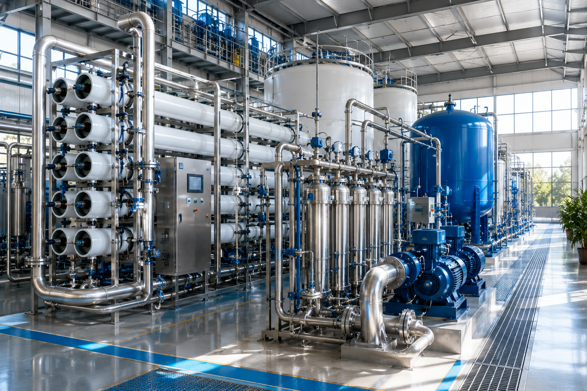
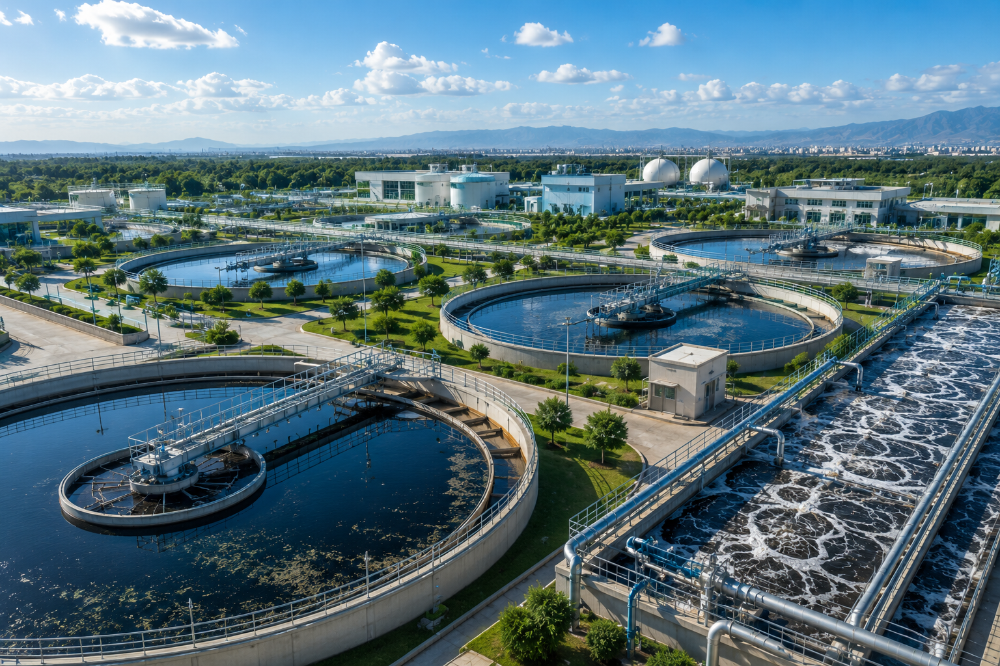
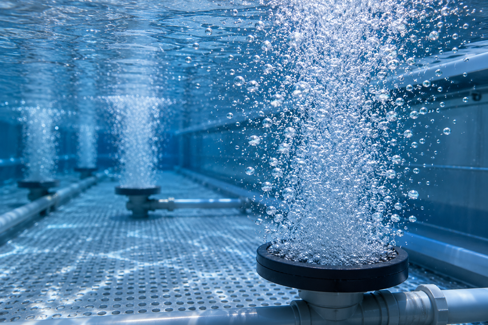
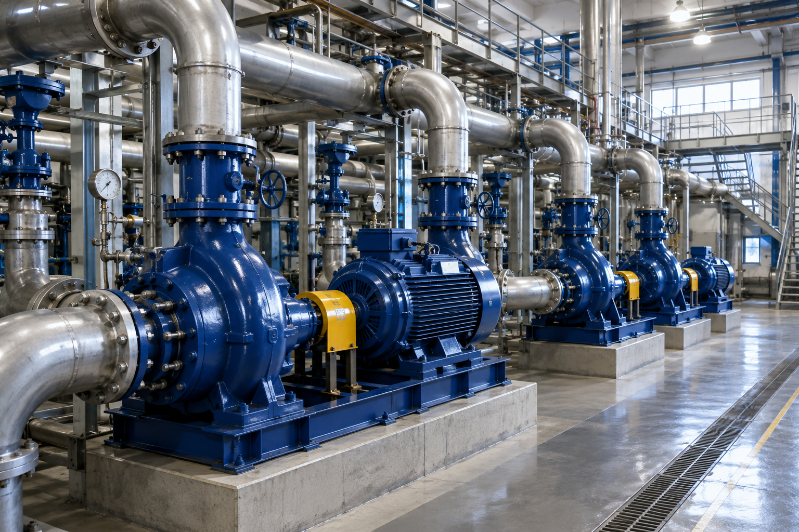
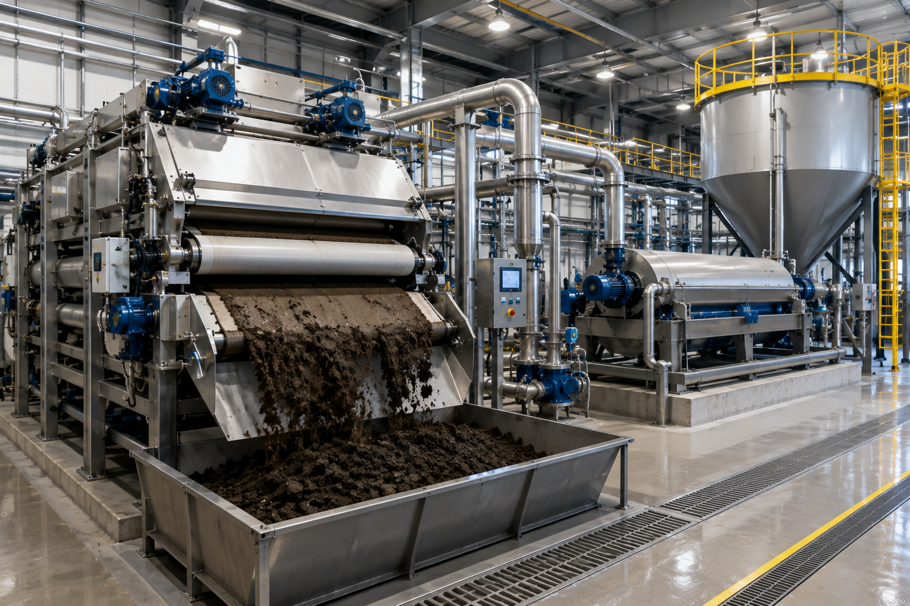
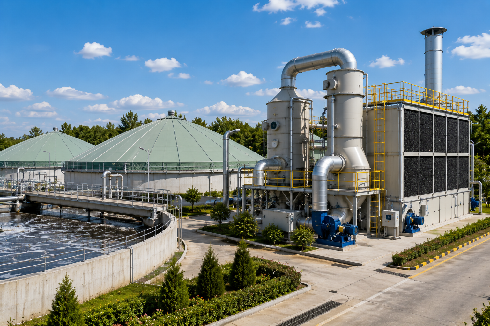
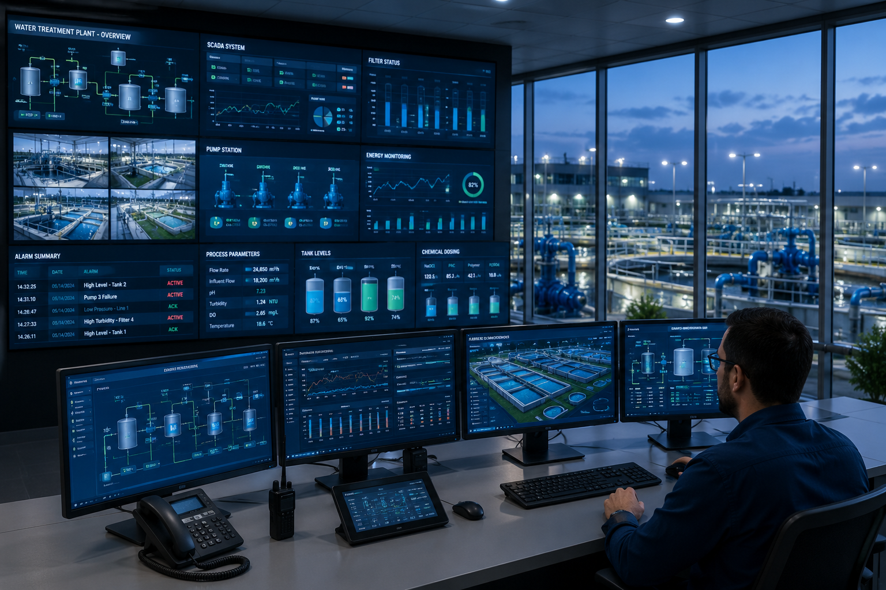
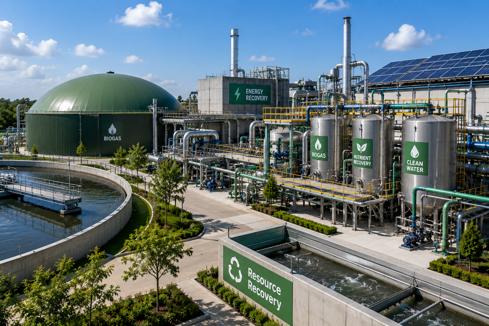
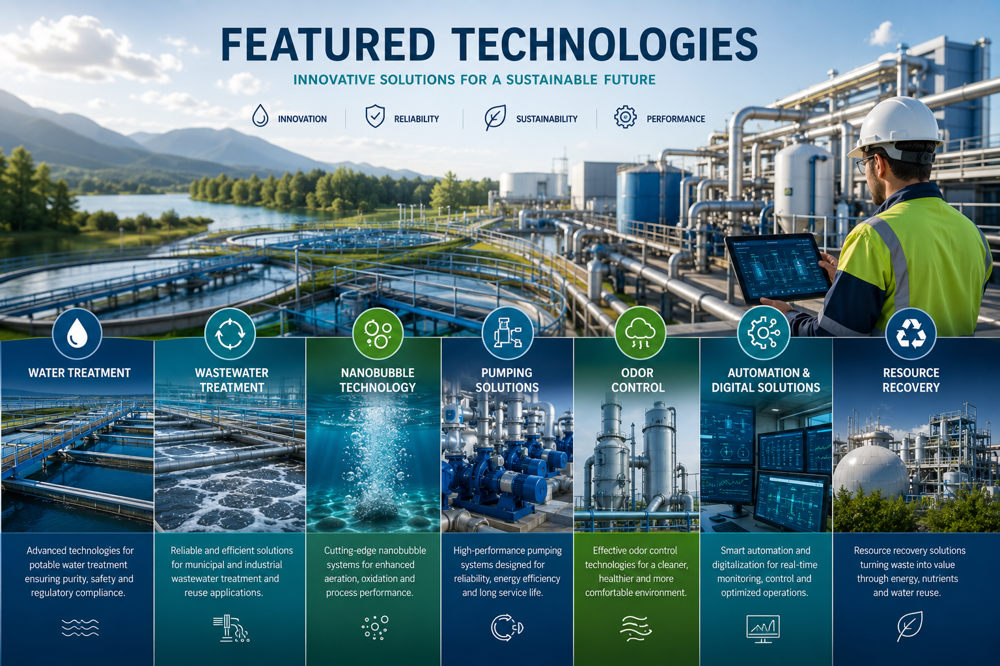

HT-Enviro integrates internationally proven environmental technologies with multidisciplinary engineering expertise to deliver efficient, reliable, and future-ready solutions. From advanced water and wastewater treatment to pumping systems, nanobubble technology, and smart environmental infrastructure, every technology we select is engineered to maximize performance, sustainability, and long-term value.
Every engineering solution begins with selecting the right technology. HT-Enviro combines internationally proven technologies with engineering expertise to deliver reliable, energy-efficient, and sustainable environmental solutions tailored to each project's unique requirements.

Advanced treatment processes for potable water, industrial water, desalination support, and process water applications with maximum efficiency and operational reliability.

Innovative biological, mechanical, and advanced treatment systems designed for municipal and industrial wastewater with water reuse capabilities.

High-performance nanobubble solutions that improve oxygen transfer, treatment efficiency, water quality, and energy savings across multiple applications.

Energy-efficient pumping technologies engineered for water transmission, wastewater transport, irrigation, industrial processes, and infrastructure projects.

Modern sludge thickening, dewatering, stabilization, and handling technologies that reduce operating costs while improving environmental performance.

Effective air treatment and odor control systems designed to improve environmental quality and ensure regulatory compliance.

Intelligent monitoring, process automation, and digital control technologies that optimize operational performance and plant efficiency.

Sustainable technologies that recover valuable resources from water and wastewater streams while supporting circular economy objectives.
HT-Enviro collaborates with internationally recognized technology providers to integrate innovative environmental solutions into every project. By combining global expertise with local engineering capabilities, we deliver high-performance technologies that maximize efficiency, sustainability, and long-term operational value.

Carefully selected technologies from leading international manufacturers with proven operational performance across municipal and industrial projects worldwide.
Every technology is engineered into a complete solution that combines hydraulic design, process optimization, automation, commissioning, and lifecycle support.
Advanced technologies focused on reducing energy consumption, improving treatment efficiency, minimizing environmental impact, and supporting sustainable infrastructure development.
Strategic collaborations with global partners ensure continuous innovation, technical support, knowledge transfer, and reliable project execution.
Technology alone does not guarantee project success. At HT-Enviro, every solution is carefully evaluated, engineered, and integrated to ensure optimum operational performance, long-term reliability, and sustainable value. Our multidisciplinary engineering approach allows us to select the most appropriate technology for each application rather than adapting projects to predefined products.
Technologies successfully implemented across municipal, industrial, and infrastructure projects around the world.
Every technology is integrated into complete engineering systems optimized for maximum operational performance.
Modern technologies designed to reduce energy consumption while improving operational efficiency and lifecycle costs.
Sustainable engineering solutions that minimize environmental impact while supporting future-ready infrastructure.
Engineering consultancy, commissioning, optimization, maintenance, and continuous technical assistance throughout the project lifecycle.
Long-term collaboration with internationally recognized technology providers ensures continuous innovation and dependable engineering solutions.
Behind every successful engineering solution is a strong technology partnership. HT-Enviro collaborates with internationally recognized manufacturers and technology innovators to deliver advanced environmental solutions that combine engineering excellence, operational reliability, and sustainable performance. Discover the global companies helping us shape the future of environmental engineering.